일반기계기사 (2012-09-15 기출문제)
1과목: 재료역학
1. 그림과 같은 외팔보에 대한 전단력 선도는?
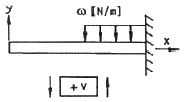
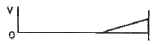
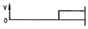
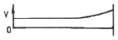
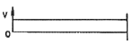
(정답률: 47%)

2. 다음과 같이 집중하중과 등분포하중을 받는 보의 중앙점 c에서의 처짐의 크기는 약 몇 mm인가? (단, 굽힘강성 EI = 10MN · m2이다.
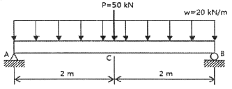
- 13.3
- 18.6
- 23.4
- 28.6
(정답률: 54%)
3. 단면치수에 비해 길이가 큰 길이 L 인 기둥 AB가 그림과 같이 한쪽 끝 A에서 고정되고, B의 도심에 작용하는 압축하중 P를 받을 때 오일러식에 의한 임계하중(Pcr)은? (단, E는 탄성계수, I는 단면 2차 모멘트이다.)
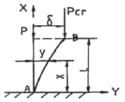
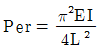
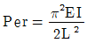
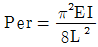
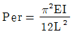
(정답률: 58%)
4. 집중 모멘트 M을 받고 있는 길이(L) 1m인 외팔보의 최대 처침량을 1cm로 제한하려면, 최대 집중 모멘트 M은 몇 N·m인가? (단, 단면은 한 변이 10cm인 정사각형이고, 탄성계수(E)는 235 GPa 이다.)
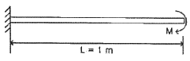
- 24516
- 29419
- 34323
- 39166
(정답률: 52%)
5. 다음 중 응력에 대한 일반적인 설명으로 틀린 것은?
- 내력의 세기(intensity)를 응력으로 나타낼 수 있다.
- 압력도 일종의 응력이다.
- 마찰력에 의해 발생되는 응력은 전단응력이다.
- 인장시험 도중 하중을 제거하여 응력이 0이 되면 변형률도 항상 0이 된다.
(정답률: 50%)
6. 그림과 같이 길이 ℓ인 단순 지지된 보 위를 하중 W가 이동하고 있다. 최대 굽힘모멘트를 발생시키는 위치 x는?
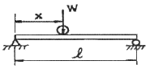
- ℓ/8
- ℓ/4
- ℓ/3
- ℓ/2
(정답률: 48%)
7. 공칭응력(nominal stress : σn)과 진응력(true stress : σt) 사이의 관계식으로 옳은 것은? (단, Єn은 공칭 변형율(nominal strain), Єt는 진변형율(ture strain) 이다.)
- σt = σn(1+Єt)
- σt = σn(1+Єn)
- σt = ln(1+σn)
- σt = ln(1+Єn)
(정답률: 50%)
8. 그림과 같은 단순보(단면 8cm×6cm)에 작용하는 최대 전단응력은 약 몇 kPa 인가?(오류 신고가 접수된 문제입니다. 반드시 정답과 해설을 확인하시기 바랍니다.)
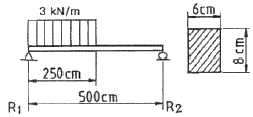
- 620
- 1930
- 1620
- 1170
(정답률: 21%)
9. 그림과 같이 직경이 d 인 원형단면에서 밑변(X′-X′)에 대한 단면 2차모멘트는?
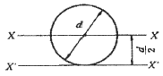
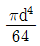
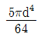
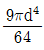
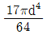
(정답률: 57%)
10. 직경이 2cm인 원통형 막대에 2kN의 인장하중이 작용하여 균일하게 신장되었을 때, 단면적의 감소량은 약 몇 cm2인가? (단, 탄성계수는 30GPa이고, 포아송 비는 0.3이다.)
- 0.004
- 0.0004
- 0.002
- 0.0002
(정답률: 34%)
11. 그림과 같이 스트레인 로제트(strain rosette)를 60°로 배열한 경우 각 스트레인 게이지에 나타나는 스트레인량으로부터 구해지는 전단 변형율 rxy는?
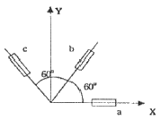
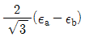
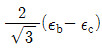
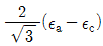
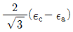
(정답률: 24%)
12. 그림과 같은 양단 고정보에서 최대 굽힘모멘트와 최대 처침으로 맞는 것은? (단, 보의 굽힘강성 EI 는 일정 하다.)
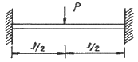
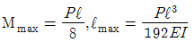
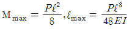
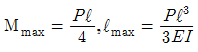
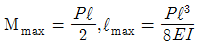
(정답률: 53%)
13. 지름 10cm, 길이 1.5m의 둥근 막대의 일단을 고정하고 자유단을 10° 비틀었다고 하면, 막대에 생기는 최대 전단응력은 약 몇 MPa인가? (단, 전단 탄성계수 G = 8.4 GPa이다.)
- 69
- 59
- 49
- 39
(정답률: 51%)
14. 그림과 같이 변의 길이가 b인 정방형 물체를 P인 힘으로 당겨서 C축 주위로 회전시키고자 한다. 물체의 무게가 200N이면(무게가 체적에 균일하게 분포된 것으로 가정) 회전시킬 수 있는 최소의 힘 P와 경사각 a로 옳은 것은? (단, 물체와 지면과의 정지마찰 계수는 1/3보다 크다.)
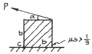
- α=60°, P=200N
- α=30°, P=100N
- α=45°, P=50√2N
- α=0°, P=200N
(정답률: 28%)
15. 그림과 같이 A, B의 원형 단면봉은 길이가 같고, 지름이 다르며, 양단에서 같은 압축하중 P를 받고 있다. 응력은 각 단면에서 균일하게 분포된다고 할 때 저장되는 탄성 변형 에너지 비 UB/UA는 얼마가 되겠는가?
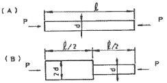
- 1/2
- 5/8
- 8/5
- 2
(정답률: 53%)
16. 단면의 면적이 500mm2인 강봉이 그림과 같은 힘을 받을 때 강봉의 변형량은 몇 mm인가? (단, 탄성계수는 E = 200 GPa이다.)
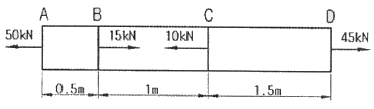
- 1.125
- 1.275
- 1.55
- 0.675
(정답률: 44%)
17. 양단이 고정된 직경 40mm이며 길이가 6m인 중실축에서 그림과 같이 비틀림모멘트 0.75 kN·m이 작용할 때 모멘트 작용점에서의 비틀림 각을 구하면 약 몇 rad인가? (단, 봉재의 전단탄성계수 G = 82 GPa이다.)
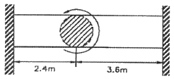
- θ = 0.⑤2
- θ = 0.077
- θ = 0.087
- θ = 0.097
(정답률: 37%)
18. 그림과 같이 한쪽 끝을 지지하고 다른쪽을 고정한 보의 단면을 직경 10cm의 원형으로 하고 보의 길이 2m의 중앙에 집중하중 P가 작용하고 있다. 재료의 허용 굽힘 응력을 8MPa로 하면 몇 N의 집중하중을 가할 수 있는가?(오류 신고가 접수된 문제입니다. 반드시 정답과 해설을 확인하시기 바랍니다.)
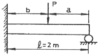
- 2510
- 2090
- 4200
- 6200
(정답률: 13%)
19. 그림과 같은 치차 전동 장치에서 A 치차로부터 D 치차로 동력을 전달한다. B와 C 치차의 피치원의 직경의 비는 DB/DC=1/8일 때, 두 축의 최대 전단응력을 같게 하는 직경의 비 d2/d1은 얼마인가?
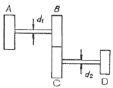
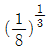
- 1/8
- 2
- 8
(정답률: 23%)
20. 지름이 1.5m인 두께가 얇은 원통용기에 1.6MPa의 압력을 갖는 가스를 넣으려고 한다. 필요한 벽 두께는 최소 몇 cm인가? (단, 허용응력은 80 MPa이다.)
- 3.3
- 6.67
- 1.5
- 0.75
(정답률: 45%)
2과목: 기계열역학
21. 증기터빈에서 증기의 상태변화로서 가장 이상적인 것은?
- 폴리트로픽 변화 (n = 1.3)
- 폴리트로픽 변화 (n = 1.5)
- 가역단열변화
- 비가역단열변화
(정답률: 46%)
22. 고열원 500℃와 저열원 35℃ 사이에 열기관을 설치 하였을 때, 사이클당 10 MJ의 공급열량에 대해서 7 MJ의 일을 하였다고 주장 한다면, 이 주장은?
- 타당함
- 가역기관이라면 타당함
- 마찰이 없다면 타당함
- 타당하지 않음
(정답률: 47%)
23. 유리창을 통해 실내에서 실외로 열전달이 일어난다. 이 때의 열전달율은 얼마인가? (단, 대류열전달계수 = 50 W/m2K, 유리창 표면온도 = 25℃, 외기온도 = 10℃, 유리창면적 = 2m2이다.)
- 15 W
- 150 W
- 1500 W
- 15000 W
(정답률: 49%)
24. 300 K에서 400 K 까지의 온도 구간에서 공기의 평균 정적 비열은 0.721 KJ/kg·K이다. 이 온도 범위에서 공기의 내부에너지 변화량은?
- 0.721 KJ/kg
- 7.21 KJ/kg
- 72.1 KJ/kg
- 721 KJ/kg
(정답률: 51%)
25. t = 20℃, P = 100 kPa의 공기 1 kg을 정압과정으로 가열 팽창시켜 체적을 5배로 할 때 몇 도(℃)의 온도 상승이 필요한가?
- 1172℃
- 1192℃
- 1312℃
- 1445℃
(정답률: 19%)
26. 이상냉동사이클에서 응축기 온도가 40℃, 증발기 온도가 –10℃이면 성능 계수는?
- 5.26
- 4.26
- 2.56
- 6.26
(정답률: 47%)
27. 완전 단열된 축전지를 전압 12 V, 전류 3A로 1시간 동안 충전한다. 축전지를 시스템으로 삼아 1시간 동안 행한 일과 열은 약 얼마인가?
- 일 = 36 kJ, 열 = 0 kJ
- 일 = 0 kJ, 열 = 36kJ
- 일 = 129.6 kJ, 열 = 0 kJ
- 일 = 0 kJ, 열 = 129.6 kJ
(정답률: 33%)
28. 다음 과정 중 카르노 사이클에 포함되는 것은?
- 가역정압과정
- 가역등온과정
- 가역정적과정
- 비가역과정
(정답률: 43%)
29. 대기 압력이 0.099MPa 일 때 용기 내 기체의 게이지 압력이 1MPa이었다. 기체의 절대압력은 몇 MPa인가?
- 0.901
- 1.099
- 1.135
- 1.275
(정답률: 49%)
30. 1 kg의 공기가 100℃를 유지하면서 가역등온 팽창하여 외부에 500kJ의 일을 하였다. 엔트로피는 얼마만큼 증가하였는가?
- 1.665 kJ/K
- 1.895 kJ/K
- 1.340 kJ/K
- 1.467 kJ/K
(정답률: 49%)
31. 800℃의 고열원과 200℃의 저열원 사이에서 작동하는 열기관 사이클의 최대 효율은 얼마인가?
- 0.33
- 0.44
- 0.56
- 0.66
(정답률: 47%)
32. 다음 중 가용에너지(유효에너지)가 가장 큰 것은?
- 25℃의 포화수
- 25℃의 포화수증기
- 100℃의 포화수
- 100℃의 포화수증기
(정답률: 35%)
33. 압력 P1 및 P2 사이에서 작용하는 카르노 공기 냉동기의 성능계수는 약 얼마인가? (단, P1 ＞ P2, P2/P1 = 0.5, k = 1.4이다.)
- 1.22
- 3.32
- 4.57
- 5.57
(정답률: 22%)
34. 랭킨(Rankine) 사이클의 각 점에서 엔탈피가(보기)와 같을 때 사이클의 이론 열효율은 약 몇 %인가?
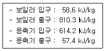
- 32
- 30
- 28
- 26
(정답률: 53%)
35. 실린더 내부의 기체를 일종의 시스템으로 가정한다. 초기압력이 150kPa이며, 체적은 0.⑤m3이다. 압력을 일정하게 유지하면서 기체의 체적을 0.1m3까지 증가시킬 때 시스템이 한 일은?
- 1.5 kJ
- 15 kJ
- 7.5 kJ
- 75 kJ
(정답률: 50%)
36. 30℃에서 비체적(specific volume)이 0.001m3/kg인 물을 100 kPa의 압력에서 800 kPa의 압력으로 압축한다. 비체적이 일정하다고 할 때, 이 펌프가 하는 일은?
- 167 J/kg
- 602 J/kg
- 700 J/kg
- 1400 J/kg
(정답률: 54%)
37. 물 2L를 1 kW의 전열기로 20℃로부터 100℃까지 가열하는데 소요되는 시간은? (단, 전열기 열량의 50%가 물을 가열하는데 유효하게 사용되고, 물은 증발하지 않는 것으로 가정한다. 물의 비열은 4.18 kJ/kg·K 이다.)
- 22분 3초
- 27분 6초
- 35분 4초
- 44분 6초
(정답률: 33%)
38. 온도 20℃의 공기 5kg을 정적 과정으로 상태 변화시켜 엔트로피가 3kJ/K 증가했다. 이때 변화 후 온도는 몇 K 인가? (단, CV=0.72 kJ/kg·K 이다.)
- 674
- 774
- 874
- 974
(정답률: 47%)
39. 다음 중 이상기체에 대한 성질로 맞는 것은?
- 압력이 증가하면 체적은 증가
- 온도가 증가하면 밀도는 증가
- 온도가 증가하면 기체상수는 감소
- 근사적으로 일반기체상수 값은 8.31 J/mol·K 이다.
(정답률: 30%)
40. 냉동기 냉매의 일반적인 구비조건으로서 적합하지 않은 사항은?
- 임계 온도가 높고, 응고 온도가 낮을 것
- 증발열이 적고, 증기의 비체적이 클 것
- 증기 및 액체의 점성이 작을 것
- 부식성이 없고, 안전성이 있을 것
(정답률: 48%)
3과목: 기계유체역학
41. 다음 중 비압축성 유동에 해당하는 것은? (단, u,v는 x,y방향의 속도 성분이다.)
- u=x2-y2, v=2xy
- u=2xy-x2, u=xy-u2
- u=xt+2y2, u=x3-yt
- u=(x+y)xt, v=(2x-y)yt
(정답률: 28%)
42. 석유를 매분 150 L의 비율로 내경 90mm인 파이프를 통하여 25m 떨어진 곳으로 수송할 때 관내의 평균 유속은 약 몇 m/s인가?
- 0.4
- 0.8
- 2.5
- 3.1
(정답률: 48%)
43. 피토정압관을 이용하여 흐르는 물의 속도를 측정하려고 한다. 액주계에는 비중 13.6인 수은이 들어있고 액주계에서 수은의 높이 차이가 28cm일 때 흐르는 물의 속도는 약 몇 m/s 인가? (단, 피토 정압관의 보정계수 C = 0.96 이다.)
- 7.98
- 7.54
- 6.87
- 5.74
(정답률: 43%)
44. Stokes Flow (스토크스 유동)의 특징은 무엇인가?
- 압축성 유동
- 비점성 유동
- 저속 유동
- 고속 유동
(정답률: 23%)
45. 바다 속에서 속도 9km/h로 운항하는 잠수함이 직경이 280mm인 구형의 음파탐지기를 끌면서 움직일 때 음파탐지기에 작용하는 항력을 풍동실험을 통해 예측하려고 한다. 풍동실험에서 Reynolds 수는 얼마로 맞추어야 하는가? (단, 바닷물의 평균 밀도는 1025 kg/m3이며, 동점성계수는 1.4 × 10-6m2/s이다.)
- 5.0 × 105
- 5.0 × 106
- 5.125 × 108
- 1.8 × 109
(정답률: 45%)
46. 다음 중 에너지의 차원을 옳게 표시한 것은? (단, F : 힘, M : 질량, L : 거리, T : 시간)
- [ML]
- [FLT-1]
- [ML2T-2]
- [MLT-2
(정답률: 41%)
47. 비누방울의 반지름이 R, 외부 압력이 Po이다. 비누막의 두께를 무시하면 비누방울의 내부 압력 P는 얼마인가? (단, 표면장력은 σ라 한다.)
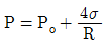
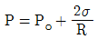
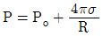
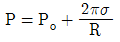
(정답률: 28%)
48. 국소 대기압이 1atm이라고 할 때, 다음 중 가장 높은 압력은?
- 1.1atm
- 0.13atm(gage)
- 115kPa
- 11 mH2O
(정답률: 48%)
49. 유체 유동 속에 잠겨있는 물체에 작용하는 양력은?
- 항상 중력의 방향과 반대 방향이다.
- 물체에 작용하는 유체력의 합력이다.
- 접근속도에 직각방향으로 물체에 작용하는 동력학적 유체의 성분이다.
- 부력이 원인이다.
(정답률: 28%)
50. 어떤 호수의 최대 깊이는 100m 이고, 평균 대기압은 93 kPa이다. 이 호수의 최대 깊이에서의 절대 압력은 몇 kPa인가? (단, 물의 밀도는 1000kg/m3 이다.)
- 980
- 1073
- 98
- 107
(정답률: 43%)
51. 아주 긴 수평 원관 내에 물이 층류로 흐르고 있을 때 평균속도가 10 m/s 라면 최대속도는 몇 m/s 인가?
- 10
- 15
- 20
- 40
(정답률: 53%)
52. 그림과 같은 피스톤 운동에서 윤활유의 동점성계수가 3×10-5m2/s, 비중량이 9025 N/m3, 피스톤의 평균 속도를 6m/s라 할 때 마찰에 의해 소비되는 동력은 약 몇 kW인가?
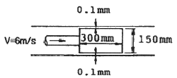
- 0.8
- 1.4
- 1.9
- 23.8
(정답률: 23%)
53. 안지름이 1cm인 파이프에 물이 평균속도 15 cm/s로 흐를 때, 관마찰계수는 얼마 정도인가? (단, 물의 동점성계수는 10-6m2/s이다.)
- 0.021
- 0.043
- 0.085
- 알 수 없음
(정답률: 52%)
54. 다음과 같이 갑자기 확대된 관에서 생기는 손실 수두는?
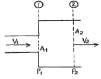
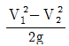
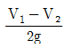
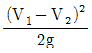
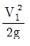
(정답률: 23%)
55. 점성효과가 무시되고 탱크가 크다고 하면 비중이 1.2인 유체 위에 깊이 2m로 물이 채워져 있을 때, 그림과 같이 직경 10cm의 탱크 출구로부터 나오는 유체의 펴균 속도는 약 몇 m/s인가?
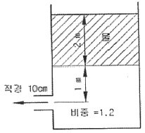
- 3
- 3.9
- 7.2
- 7.7
(정답률: 23%)
56. 비점성, 비압축성 유체가 그림과 같이 작은 구멍을 향해 쐐기모양의 벽면 사이를 흐른다. 이 유동을 근사적으로 표현하는 속도 포텐셜이 ø=-2lnr 일 때, 작은 구멍으로 흐르는 단위 깊이 당 체적유량은 몇m2/s인가? (단,
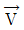
=▽ø=grad ø로 정의하고, 음의 부호는 유량의 방향이 구멍을 향한다는 것을 의미한다.)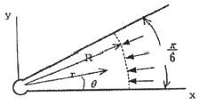
- -π
- -π/2
- -π/3
- -π/4
(정답률: 30%)
57. 그림과 같이 물속에 수직으로 잠겨 있는 삼각형 판재 ABC의 한쪽 면에 작용하는 힘은 얼마인가?
(정답률: 34%)
58. 유효 낙차가 100 m인 댐의 유량이 10m3/s일 때 효율 90%인 수력터빈의 출력은 약 몇 MW 인가?
- 8.83
- 9.81
- 10.0
- 10.9
(정답률: 39%)
59. 기하학적으로 상사한 두 물체가 동일 액체 내에서 운동할 때 물체 둘레를 흐르는 유체가 역학적으로 상사를 이루려면 다음 중 무엇이 같아야 하는가?
- 프루드 수
- 관성력에 대한 압력의 비
- 점성력에 대한 압력의 비
- 레이놀즈 수
(정답률: 39%)
60. 그림과 같이 노즐로부터 수직 방향으로 분사되는 물의 분류와 무게 600 N의 추가 평형을 유지할 수 있는 분류 속도 V는 약 몇 m/s 인가? (단, 물의 무게는 무시한다.)
- 3.5
- 8.7
- 13.1
- 63.7
(정답률: 41%)
4과목: 기계재료 및 유압기기
61. 크롬이 특수강의 재질에 미치는 가장 중요한 영향은?
- 결정립의 성장을 방해
- 내식성을 증가
- 저온취성 촉진
- 내마모성 저하
(정답률: 68%)
62. Fe-C 평형상태도에서 나타나는 철강의 기본조직이 아닌 것은?
- 페라이트
- 펄라이트
- 시멘타이트
- 마텐자이트
(정답률: 58%)
63. 일반적으로 금속의 가공성이 가장 좋은 격자는?
- 체심입방격자
- 조밀육방격자
- 면심입방격자
- 정방격자
(정답률: 61%)
64. 압연용 롤, 분쇄기 롤, 철도차량 등 내마멸성이 필요한 기계부품에 사용되는 가장 적합한 주철은?
- 칠드 주철
- 구상흑연 주철
- 회 주철
- 펄라이트 주철
(정답률: 55%)
65. 시계나 정밀계측기 등에 사용되는 스프링을 만드는 재료로 가장 적합한 것은?
- 인청동
- 미하나이트
- 엘린바
- 애드미럴티
(정답률: 69%)
66. 탄소강에 함유된 인(P)의 영향을 바르게 설명한 것은?
- 강도와 경도를 감소시킨다.
- 결정립을 미세화시킨다.
- 연신율을 증가시킨다.
- 상온 취성의 원인이 된다.
(정답률: 73%)
67. 초경합금 공구강을 구성하는 탄화물이 아닌 것은?
- WC
- TiC
- TaC
- Fe3C
(정답률: 57%)
68. 상온에서 탄소강의 현미경 조직으로 탄소가 약 0.8% 인 강의 조직은?
- 오스테나이트
- 펄라이트
- 레데뷰라이트
- 시멘타이트
(정답률: 47%)
69. 특수강에서 특수원소를 첨가하는 이유로 적당치 않은 것은?
- 임계냉각속도를 크게 하려고
- 경화능력을 증가
- 질량효과의 감소
- 기계적 성질을 개선
(정답률: 53%)
70. 다음 중 인청동의 특징이 아닌 것은?
- 내식성이 좋다.
- 연성이 좋다.
- 탄성이 좋다.
- 내마멸성이 좋다.
(정답률: 39%)
71. 유압 시스템의 배관계통과 시스템 구성에 사용되는 유압기기의 이물질을 제거하는 작업으로 유압기계를 처음 설치하였을 때나 오랫동안 사용하지 않던 설비의 운전을 다시 시작하였을 때 하는 작업은?
- 클리닝(cleaning)
- 플러싱(flushing)
- 스위핑(sweeping)
- 크래킹(cracking)
(정답률: 65%)
72. 유압실린더에서 피스톤 로드가 부하를 미는 힘이 50 kN 피스톤 속도가 3.8m/min 인 경우 실린더 내경이 8cm이라면 소요동력은 약 몇 kW 인가? (단, 편로드형 실린더이다.)
- 2.45
- 3.17
- 4.32
- 5.89
(정답률: 58%)
73. 자중에 의한 낙하, 운동 물체의 관성에 의한 액추에이터의 자중 등을 방지하기 위해 배압을 생기게 하고, 다른 방향의 흐름이 자유롭게 흐르도록 한 밸브는?
- 카운터 밸런스 밸브
- 감압 밸브
- 릴리프 밸브
- 스로틀 밸브
(정답률: 71%)
74. 유압작동유의 구비 조건으로 부적당한 것은?
- 비압축성일 것
- 큰 점도를 가질 것
- 온도에 대해 점도변화가 작을 것
- 열전달율이 높을 것
(정답률: 49%)
75. 다음 중 일반적으로 가장 높은 압력을 생성할 수 있는 펌프는?
- 베인 펌프
- 기어 펌프
- 스크루 펌프
- 피스톤 펌프
(정답률: 51%)
76. 그림과 같은 유압 기호의 명칭은?
- 어큐물레이터
- 정용량형 펌프 · 모터
- 차동실린더
- 가변용량형 펌프 · 모터
(정답률: 55%)
77. 다음 중 점성계수의 차원으로 옳은 것은? (단, M은 질량, L은 길이, T는 시간이다.)
- ML-1T-1
- ML-2T-1
- MLT-2
- ML-2T-2
(정답률: 50%)
78. 그림과 같이 액추에이터의 공급 쪽 관로 내의 흐름을 제어함으로써 속도를 제어하는 회로는?
- 인터로크 회로
- 미터 인 회로
- 시퀀스 회로
- 미터 아웃 회로
(정답률: 65%)
79. 다음 유압회로는 어떤 회로에 속하는가?
- 미터 아웃 회로
- 동조 회로
- 로크 회로
- 무부하 회로
(정답률: 50%)
80. 주로 오일 탱크 안에서 흡입관과 복귀관 사이에 설치된 것으로 유압 작동유가 탱크의 벽면을 타고 흐르도록 하여 유압 작동유에 혼입되어 있는 기포와 수분을 제거하는 역할을 하는 것은?
- 배플(baffle)
- 스트레이너(strainer)
- 블래더(bladder)
- 드레인 플러그(drain plug)
(정답률: 32%)
5과목: 기계제작법 및 기계동력학
81. 다음 중 고속회전 및 정밀한 이송기구를 갖추고 있으며, 다이아몬드 또는 초경합금의 절삭공구로 가공하는 보링머신으로 정밀도가 높고 표면거칠기가 우수한 내연기관 실린더나 베어링 면을 가공하기에 가장 적합한 것은?
- 보통 보링 머신
- 코어 보링 머신
- 정밀 보링 머신
- 드릴 보링 머신
(정답률: 62%)
82. 절삭 가공 시 발생하는 구성인선(built up edge)에 관한 설명으로 옳은 것은?
- 공구 윗면 경사각이 작을수록 구성인선은 감소한다.
- 고속으로 절삭할수록 구성인선은 감소한다.
- 마찰계수가 큰 절삭공구를 사용하면, 칩의 흐름에 대한 저항을 감소시킬 수 있어 구성인선을 감소시킬 수 있다.
- 칩읠 두께를 증가시키면 구성인선을 감소시킬 수 있다.
(정답률: 63%)
83. 정결제로 열경화성 수지를 사용하여 주형을 제작하는 주조법은?
- 다이캐스팅
- 원심 주조법
- 진공 주조법
- 셸 몰드법
(정답률: 46%)
84. 전기저항 용접을 겹치기 용접과 맞대기 용접으로 분류할 때 맞대기 용접에 해당하는 것은?
- 점 용접
- 심 용접
- 플래시 용접
- 프로젝션 용접
(정답률: 42%)
85. 수나사의 바깥지름(호칭지름), 골지름, 유효지름, 나사산의 각도, 피치를 모두 측정할 수 있는 측정기는?
- 나사 마이크로미터
- 피치 게이지
- 나사 게이지
- 투영기
(정답률: 33%)
86. 나사의 유효지름을 측정할 때, 다음 중 가장 정밀도가 높은 측정법은?
- 버니어캘리퍼스에 의한 측정
- 측장기에 의한 측정
- 삼침법에 의한 측정
- 투영기에 의한 측정
(정답률: 62%)
87. 용접봉의 용융점이 모재의 용융점보다 낮거나 용입이 얕아서 비드가 정상적으로 형성되지 못하고 위로 겹쳐지는 현상은?
- 스패터링
- 언더컷
- 오버랩
- 크레이터
(정답률: 62%)
88. 다음 빈칸에 들어갈 숫자로 옳게 짝지어진 것은?
- A : 0.60, B : 48
- A : 0.36, B : 48
- A : 0.60, B : 75
- A : 0.36, B : 75
(정답률: 61%)
89. 방전가공에 대한 설명으로 틀린 것은?
- 경도가 높은 재료는 가공이 곤란하다.
- 가공물과 전극사이에 발생하는 아크(arc) 열을 이용한다.
- 가공정도는 전극의 정밀도에 따라 영향을 받는다.
- 가공 전극은 동, 흑연 등이 쓰인다.
(정답률: 65%)
90. 수기(手技) 가공에서 수나사를 가공할 수 있는 공구는?
- 탭(tap)
- 다이스(dies)
- 펀치(punch)
- 바이트(bite)
(정답률: 42%)
91. 블록 A와 B의 질량은 각각 11kg과 5kg이다. 두 블록 모두 지상으로부터 2m 높이에 정지해 있는 상태에서 놓았다. 블록 A가 바닥에 부딪히기 직전의 속도가 3m/s였다면 풀리의 마찰에 의해 손실된 에너지는 몇 J인가?
- 35.7
- 45.7
- 55.7
- 65.7
(정답률: 24%)
92. 타격연습용 투구기가 지상 1.5m 높이에서 수평으로 공을 발사한다. 공이 수평거리 16m를 날아가 땅에 떨어진다면, 공의 발사속도의 크기는 약 몇 m/s인가?
- 11
- 16
- 21
- 29
(정답률: 32%)
93. 곡선 경로에서의 질점의 운동을 기술한 것 중 맞는 것은?
- 속도의 크기가 일정하면 전체 가속도의 방향은 항상 접선 방향이다.
- 속도의 크기와 상관없이 전체 가속도의 방향은 항상 접선 방향이다.
- 속도의 크기가 일정하면 전체 가속도의 방향은 항상 법선 방향이다.
- 속도의 크기와 상관없이 전체 가속도의 방향은 항상 법선 방향이다.
(정답률: 23%)
94. 그림과 같은 진동계의 정적 처짐(static deflection)을 측정하니 0.075m이고 물체 B를 제거한 후의 정적 처침을 측정하니 0.⑤m이었다. 물체 B의 질량이 3kg일 대 물체 A의 질량은 몇 kg인가?
- 9
- 6
- 3
- 1.5
(정답률: 35%)
95. 단진자의 원리를 이용한 추 시계를 가지고 엘리베이터에 탔다. 이 시계가 더 빠르게 가는 순간은?
- ㄱ 과 ㄷ
- ㄱ 과 ㄹ
- ㄴ 과 ㄷ
- ㄴ 과 ㄹ
(정답률: 28%)
96. 다음 1자유도 진동계의 임계 감쇠는 몇 N · s/m인가?
- 80
- 400
- 800
- 2000
(정답률: 50%)
97. 크랭크 암(crank arm) AB가 A점을 중심으로 각속도 rod/s로 회전한다. 그림의 위치에서 피스톤 핀 P의 속도는? (단, = 1m, (connecting rod) = 1m)
- 왼쪽 방향 100 m/s
- 왼쪽 방향 200 m/s
- 오른쪽 방향 300 m/s
- 왼쪽 방향 400 m/s
(정답률: 26%)
98. 같은 차종인 자동차 B, C가 브레이크가 풀린 채 정지하고 있다. 이 때 같은 차종의 자동차 A가 1.5m/s의 속력으로 B와 충돌하면, 이후 B와 C가 다시 충돌하게 되어 결국 3대의 자동차가 연쇄 충돌하게 된다. 이때, B와 C가 충돌한 직후의 자동차 C의 속도는 약 몇 m/s 인가? (단, 범퍼사이의 반발계수는 e=0.75 이다.)
- 0.16
- 0.19
- 1.15
- 1.31
(정답률: 40%)
99. 반지름이 0.5m인 바퀴가 미끄러짐 없이 굴러간다. Vo=20im/s이고, ao=5i m/s2일 때 지면과 접촉하고 있는 바퀴의 하단점 A의 가속도는 몇 m/s2인가? (단, i, j는 x, y축 각각의 단위 벡터를 나타낸다.)
- 0
- 10i + 800j
- 800j
- 10i - 800j
(정답률: 19%)
100. 그림은 가속도계의 내부를 1자유도 시스템으로 단순화시킨 모델이며 고유진동수는 이 가속도계를 ω의 주파수로 진동하고 있는 물체에 부착하여 가속도의 양을 직접적으로 측정하고자 할 경우 ω와 ωn 어떤 관계에 있어야 하는가?
- ω=≪ωn
- ω=ωn
- ω≫ωn
- 아무 상관 없다.
(정답률: 22%)